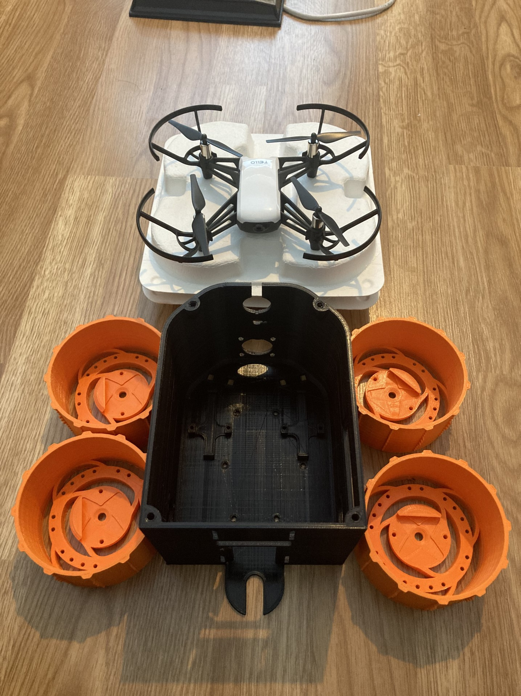

Your twitter archive
Check out @antlerboy's new post, "This intriguing image contains two possibilities for organisations, and the people who spend their…". https://medium.com/@antlerboy/this-intriguing-image-contains-two-possibilities-for-organisations-and-the-people-who-spend-their-320174c60a3b?source=rss-97852f5a56ae------2
 Wed Feb 03 08:23:09 +0000 2021
Wed Feb 03 08:23:09 +0000 2021
Check out @anthilemoon's new post, "The Nirvana fallacy: when perfectionism leads to unrealistic solutions". https://nesslabs.com/nirvana-fallacy?utm_source=rss&utm_medium=rss&utm_campaign=nirvana-fallacy
Wed Feb 03 15:41:30 +0000 2021
Check out @anthilemoon's new post, "The benefits of stretching: why your body needs to move". https://nesslabs.com/stretching-routine?utm_source=rss&utm_medium=rss&utm_campaign=stretching-routine
Wed Feb 03 19:46:08 +0000 2021
Check out @antlerboy's new post, "What’s wrong the way we use organisational measures?". https://medium.com/@antlerboy/whats-wrong-the-way-we-use-organisational-measures-ec6c0f3e2f88?source=rss-97852f5a56ae------2
Thu Feb 04 08:03:13 +0000 2021
Check out @anthilemoon's new post, "Navigating the mind: 40 major fields of psychology and neuroscience". https://nesslabs.com/navigating-the-mind-major-fields-psychology-and-neuroscience?utm_source=rss&utm_medium=rss&utm_campaign=navigating-the-mind-major-fields-psychology-and-neuroscience
Thu Feb 04 15:46:08 +0000 2021
Check out the latest edition of the Yak Talk newsletter, "New Year, Newsletter". https://yakcollective.substack.com/p/new-year-newsletter
Fri Feb 05 22:01:34 +0000 2021
Check out @vgr's new newsletter, "Tick-Tock Talk -- 2: ". https://breakingsmart.substack.com/p/tick-tock-talk-2
Sat Feb 06 03:33:14 +0000 2021
Check out @randylubin's new post, "Prerendering Vue for Story Synth Unfurls". https://blog.randylubin.com/prerendering-vue-for-story-synth-unfurls
Mon Feb 08 16:28:42 +0000 2021
Check out @anthilemoon's new post, "Sophrosyne: the art of mindful moderation". https://nesslabs.com/sophrosyne?utm_source=rss&utm_medium=rss&utm_campaign=sophrosyne
Tue Feb 09 18:51:10 +0000 2021
Check out @antlerboy's new post, "What would you most like me to write about on LinkedIn?". https://medium.com/@antlerboy/what-would-you-most-like-me-to-write-about-on-linkedin-baf13ed4e2e8?source=rss-97852f5a56ae------2
Wed Feb 10 08:03:26 +0000 2021
Check out @anthilemoon's new post, "9 useful templates for Roam Research". https://nesslabs.com/9-useful-templates-for-roam-research?utm_source=rss&utm_medium=rss&utm_campaign=9-useful-templates-for-roam-research
Wed Feb 10 12:01:57 +0000 2021
Check out @antlerboy's new post, "What topics should I dig into in more depth?". https://medium.com/@antlerboy/what-topics-should-i-dig-into-in-more-depth-cf9ec358e0a2?source=rss-97852f5a56ae------2
Thu Feb 11 07:53:24 +0000 2021
Check out @anthilemoon's new post, "The Diderot Effect: why we buy things we don’t need". https://nesslabs.com/the-diderot-effect?utm_source=rss&utm_medium=rss&utm_campaign=the-diderot-effect
Thu Feb 11 09:06:29 +0000 2021
Check out @vgr's new newsletter, "Shadowland - 1". https://breakingsmart.substack.com/p/shadowland-1
Sat Feb 13 05:48:30 +0000 2021
Check out @anthilemoon's new post, "Nootropics, adaptogens, brain foods… What the heck is going on?". https://nesslabs.com/nutritional-neuroscience-nootropics-adaptogens-brain-foods?utm_source=rss&utm_medium=rss&utm_campaign=nutritional-neuroscience-nootropics-adaptogens-brain-foods
Tue Feb 16 14:31:24 +0000 2021
Check out @antlerboy's new post, "What would happen if you said what you really thought?". https://medium.com/@antlerboy/what-would-happen-if-you-said-what-you-really-thought-35480cf12ed1?source=rss-97852f5a56ae------2
Wed Feb 17 08:28:24 +0000 2021
Check out @anthilemoon's new post, "The ambidextrous mindset: how to balance exploration and exploitation". https://nesslabs.com/exploration-exploitation-ambidextrous-mindset-success-trap?utm_source=rss&utm_medium=rss&utm_campaign=exploration-exploitation-ambidextrous-mindset-success-trap
Wed Feb 17 09:26:13 +0000 2021
#yakborg #yakrover #InfinityandBeyond Printed wheels and body. Scouting drone arrived. Nearly #ready2rove.

Wed Feb 17 09:37:52 +0000 2021
Check out @antlerboy's new post, "Do public ‘services’ make things worse?
Does help *actually* help?". https://medium.com/@antlerboy/do-public-services-make-things-worse-does-help-actually-help-5a2484036e70?source=rss-97852f5a56ae------2
Thu Feb 18 08:23:18 +0000 2021
🥳😅 https://twitter.com/NASAPersevere/status/1362507436611956736
Fri Feb 19 03:58:33 +0000 2021
Check out @vgr's new newsletter, "Mars and the Meaning of Money". https://breakingsmart.substack.com/p/mars-and-the-meaning-of-money
Sat Feb 20 00:53:30 +0000 2021
Check out @randylubin's new post, "Story Synth’s Games Gallery". https://blog.randylubin.com/story-synth-s-games-gallery
Mon Feb 22 00:23:41 +0000 2021
Check out @sachinb91's new post, "#13 Space Travel as Hot Media ". https://prospecttheory.substack.com/p/13-space-travel-as-hot-media
Wed Feb 24 06:11:53 +0000 2021
Check out @antlerboy's new post, "The worst projects I’ve ever been on have been doomed to succeed". https://medium.com/@antlerboy/the-worst-projects-ive-ever-been-on-have-been-doomed-to-succeed-f9b170a8bd4f?source=rss-97852f5a56ae------2
Wed Feb 24 07:58:09 +0000 2021
Check out @anthilemoon's new post, "The Semmelweis Reflex: when current beliefs trump new knowledge". https://nesslabs.com/semmelweis-reflex?utm_source=rss&utm_medium=rss&utm_campaign=semmelweis-reflex
Wed Feb 24 14:06:17 +0000 2021
Check out @HiredThought's new post, "Donald A Schön at Iowa State University (Talk Transcript)". https://hiredthought.com/2021/02/24/donald-a-schon-at-iowa-state-university-talk-transcript/
Wed Feb 24 16:48:19 +0000 2021
Check out @tomcritchlow's new post, "Reimagining the Research Lab". http://tomcritchlow.com/2021/02/24/research-studios/
Wed Feb 24 20:52:27 +0000 2021
Check out @antlerboy's new post, "What are your fundamental needs at work? And are they being met?". https://medium.com/@antlerboy/what-are-your-fundamental-needs-at-work-and-are-they-being-met-59b516e4686f?source=rss-97852f5a56ae------2
Thu Feb 25 07:48:20 +0000 2021
Check out @anthilemoon's new post, "The problem with work-life balance". https://nesslabs.com/work-life-balance-problem?utm_source=rss&utm_medium=rss&utm_campaign=work-life-balance-problem
Thu Feb 25 08:56:10 +0000 2021
Check out @vgr's new newsletter, "Shadowland -2 ". https://breakingsmart.substack.com/p/shadowland-2
Sat Feb 27 01:28:28 +0000 2021
Check out Ben Smith's new post, "Links for 2/21/21". https://bens.substack.com/p/links-for-22121
Sun Feb 28 04:22:16 +0000 2021